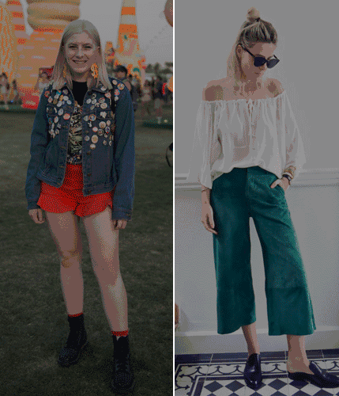
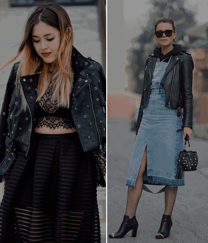

下面几处肥肉“重灾区”是我们的显瘦主战场。
来不及减肥，
就用美美的衣物把它们 “藏起来”！😉拜拜肉是会呼吸的痛，它留在每一次挥手之后。手臂上的肥肉总是让我们无法面对喜欢的衣裙，美美的夏天似乎就这样和我们“拜拜”了。
其实选对“袖子”就能帮你完美隐藏“麒麟臂”。不管是薄纱衬衣还是连衣裙，都可以与喇叭袖完美搭配在一起，藏住赘肉的同时，美美的荷叶式袖口还能轻松转移视线。
夏季又称“腿季”，高温的秀场是大长腿们的天下。永远都是一条长裙过夏天的你，是时候做出一点改变了！
今年夏天，粗腿的你可以靠它们找到一席之地！ A字裙：A字高腰裙不但能拉长下半身的比例，还能完美地把最胖的胯部和大腿“一键隐藏”。
阔腿裤：从大腿到裤脚都是一样宽度的阔腿裤能巧妙规避腿部的缺陷。相较于紧身的小脚裤，是更好的选择哦。
对于小肚子“患者”来说，夏天是个令人紧张的季节。一个不小心忘了收肚子，立刻就会暴露它的存在。
除了超大号的“孕妇装”，还有这招 “必杀技”！ 顾名思义，直筒一般简单率性的剪裁，无论搭配高跟鞋还是帆布鞋都能时髦出街，小肚腩也可以“自由呼吸”啦！
小长假出游当然不能毫无准备！
赶紧get这些小技能，
减肥路上也能自信满分！